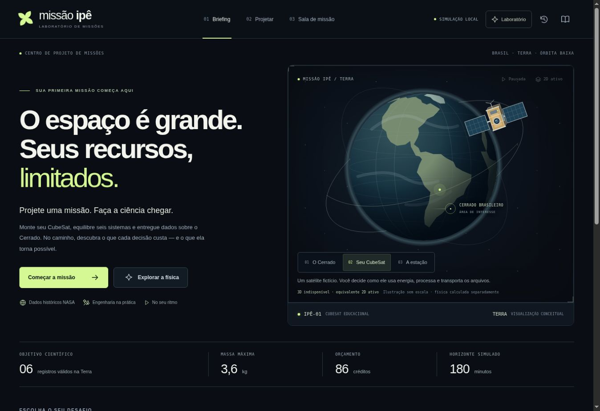
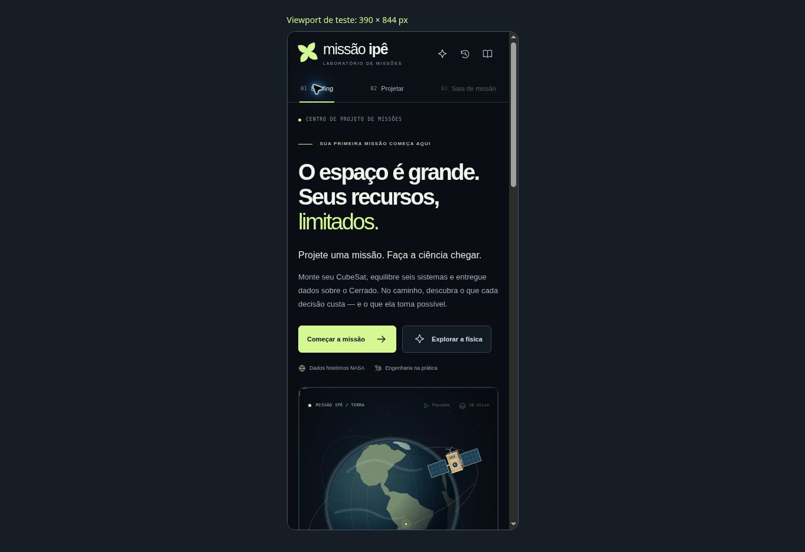
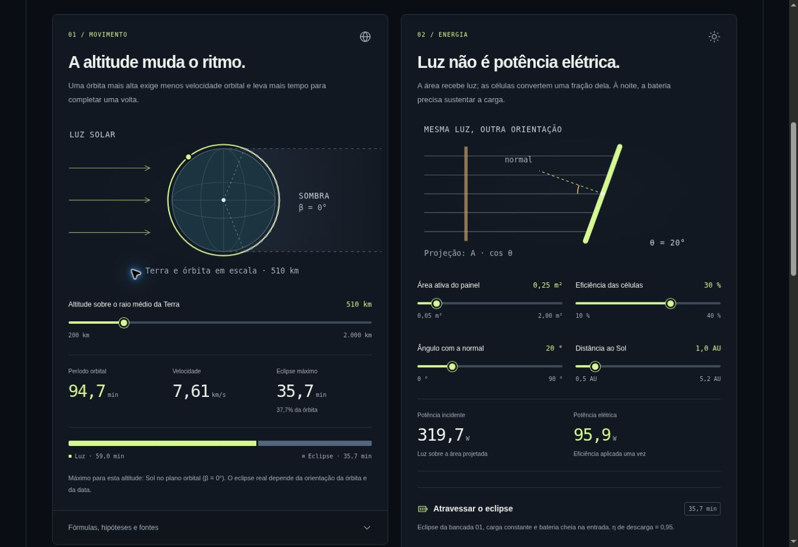
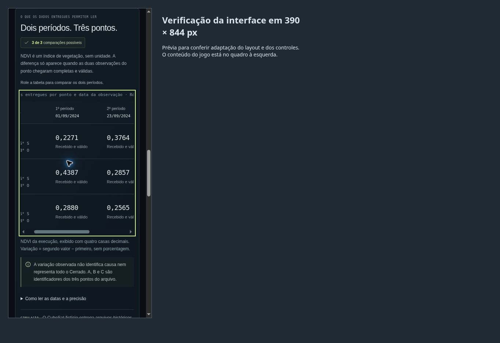

← Verificação no navegadorEvidências visuais.
Capturas da prévia em 14/11/2026. O modo observado foi o equivalente 2D. A vista estreita usa um iframe; não representa um aparelho físico.
Abertura em desktop · equivalente 2D

Viewport de 390 × 844 px em iframe

Bancadas de órbita e energia

Retorno científico · três pares entregues

Tabela científica em viewport estreito · foco de teclado
